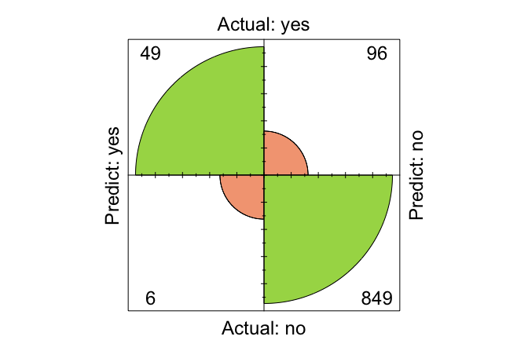

8 Model Evaluation and Performance Assessment
All models are wrong, but some are useful.
How can we determine whether a machine learning model is genuinely effective? Is 95 percent accuracy always impressive, or can it mask serious weaknesses? How do we balance detecting true cases while avoiding unnecessary false alarms? These questions lie at the core of model evaluation.
The quote that opens this chapter — “All models are wrong, but some are useful” — captures an essential idea in predictive modelling. No model can represent reality perfectly. Every model is a simplification. The goal is therefore not to find a flawless model, but to determine whether a model is useful for the task at hand. Evaluation is the process that helps us judge that usefulness.
Imagine providing the same dataset and research question to ten data science teams. It is entirely possible to receive ten different conclusions. These discrepancies rarely arise from the data alone; they stem from how each team evaluates its models. A model that one group considers successful may be unacceptable to another, depending on the metrics they emphasise, the thresholds they select, and the trade-offs they regard as appropriate. Evaluation reveals these differences and clarifies what useful means in a specific context.
In the previous chapter, we introduced our first machine learning method, kNN, and applied it to the churnCredit dataset. We explored how feature scaling and the choice of \(k\) influence the model’s predictions. This raises a central question for this chapter: How well does the classifier actually perform? Without a structured evaluation, any set of predictions remains incomplete and potentially misleading.
To answer this question, we now turn to the Model Evaluation phase of the Data Science Workflow introduced in Chapter 2 and illustrated in Figure 2.3. Up to this point we have completed the first five phases:
Problem Understanding: defining the analytical objective;
Data Preparation: cleaning, transforming, and organising the data;
Exploratory Data Analysis (EDA): identifying patterns and relationships;
Data Setup for Modeling: scaling, encoding, and partitioning the data;
Modeling: training algorithms to generate predictions or uncover structure.
The sixth phase, Model Evaluation, focuses on assessing how well a model generalises to new, unseen data. It determines whether the model captures meaningful patterns or merely memorises noise.
A model may appear to perform well during development but falter in deployment, where data distributions can shift and the consequences of errors can be substantial. Careful evaluation provides a foundation for reliable, trustworthy predictions and ensures that the chosen model is genuinely suitable for its intended use.
Why Is Model Evaluation Important?
Building a model is only the first step. Its real value lies in its ability to generalise to new, unseen data. A model may appear to perform well during development but fail in real-world deployment, where data distributions can shift and the consequences of errors may be substantial.
Consider a model built to detect fraudulent credit card transactions. Suppose it achieves 95 percent accuracy. Although this seems impressive, it can be highly misleading if only 1 percent of the transactions are fraudulent. In such an imbalanced dataset, a model could label all transactions as legitimate, achieve high accuracy, and still fail entirely at detecting fraud. This example illustrates an important principle: accuracy alone is often insufficient, particularly in class-imbalanced settings.
Effective evaluation provides a more nuanced view of performance by revealing both strengths and limitations. It clarifies what the model does well, such as correctly identifying fraud, and where it falls short, such as missing fraudulent cases or generating too many false alarms. It also highlights the trade-offs between competing priorities, including sensitivity versus specificity and precision versus recall.
Evaluation is not only about computing metrics. It is also about establishing trust. A well-evaluated model supports responsible decision-making by aligning performance with the needs and risks of the application. Key questions include:
How does the model respond to class imbalance?
Can it reliably detect true positives in high-stakes settings?
Does it minimise false positives, especially when unnecessary alerts carry a cost?
These considerations show why model evaluation is an essential stage in the data science workflow. Selecting appropriate metrics and interpreting them in context allows us to move beyond surface-level performance toward robust, reliable solutions.
What This Chapter Covers
This chapter introduces essential methods for evaluating supervised machine learning models. As discussed in Chapter 2.11, supervised learning includes classification and regression, where true labels are available for assessing model performance. In these settings, models generate either categorical outcomes (classification) or numerical outcomes (regression), and the way we evaluate their performance differs because the nature of their predictions is fundamentally different.
In classification settings, evaluation focuses on how often the predicted class labels agree with the true labels, which makes tools such as the confusion matrix central to the analysis. When the target variable is numerical, this approach no longer applies. Instead, evaluation focuses on how far the predicted values deviate from the actual values, shifting attention from counting errors to quantifying the magnitude of prediction errors.
We begin with binary classification, examining how to interpret confusion matrices and compute key performance measures such as accuracy, precision, recall, and the F1-score. The chapter then explores how adjusting classification thresholds affects prediction behaviour and introduces ROC curves and the Area Under the Curve (AUC) as tools for visualising and comparing classifier performance.
Next, we turn to regression models and discuss commonly used measures such as Mean Square Error (MSE), Mean Absolute Error (MAE), and the coefficient of determination (\(R^2\)), with guidance on how these values should be interpreted in applied contexts.
These measures are widely used across machine learning and will appear throughout the chapters that follow. Understanding them now provides a foundation for assessing and comparing models across a range of applications.
The chapter combines visualisations and practical examples to support interpretation and build conceptual understanding. By the end, you will be able to select appropriate metrics for different modelling tasks, interpret performance critically, and evaluate models effectively in both classification and regression scenarios.
We now begin with one of the most foundational tools in model evaluation: the confusion matrix, which offers a structured summary of prediction outcomes.
8.1 Confusion Matrix
How can we determine where a model performs well and where it falls short? The confusion matrix provides a clear and systematic way to answer this question. It is one of the most widely used tools for evaluating classification models because it records how often the model assigns each class label correctly or incorrectly.
In binary classification, one class is designated as the positive class, usually representing the event of primary interest, while the other is the negative class. In fraud detection, for example, fraudulent transactions are treated as positive, and legitimate transactions as negative.
Figure 8.1 shows the structure of a confusion matrix. The rows correspond to the actual class labels, and the columns represent the predicted labels. Each cell of the matrix captures one of four possible outcomes. True positives (TP) occur when the model correctly predicts the positive class (for example, a fraudulent transaction correctly detected). False positives (FP) arise when the model incorrectly predicts the positive class (a legitimate transaction flagged as fraud). True negatives (TN) are correct predictions of the negative class, while false negatives (FN) occur when the model misses a positive case (a fraudulent transaction classified as legitimate).
This structure parallels the ideas of Type I and Type II errors discussed in Chapter 5. The diagonal entries (TP and TN) indicate correct predictions, while the off-diagonal entries (FP and FN) represent misclassifications.
From the confusion matrix we can compute several basic metrics. Two of the most general are accuracy and error rate.
Accuracy, sometimes called the success rate, measures the proportion of correct predictions: \[ \text{Accuracy} = \frac{\text{TP} + \text{TN}}{\text{TP} + \text{FP} + \text{FN} + \text{TN}}. \]
The error rate is the proportion of incorrect predictions: \[ \text{Error Rate} = 1 - \text{Accuracy} = \frac{\text{FP} + \text{FN}}{\text{TP} + \text{FP} + \text{FN} + \text{TN}}. \]
Although accuracy provides a convenient summary, it can be misleading. Consider a dataset in which only 5 percent of transactions are fraudulent. A model that labels every transaction as legitimate would still achieve 95 percent accuracy, yet it would fail entirely at identifying fraud. Situations like this highlight the limitations of accuracy, especially when classes are imbalanced or when the positive class carries greater importance.
To understand a model’s strengths and weaknesses more fully, especially how well it identifies positive cases or avoids false alarms, we need additional metrics. The next section introduces sensitivity, specificity, precision, and recall.
In R, a confusion matrix can be computed using the conf.mat() function from the liver package, which provides a consistent interface for classification evaluation. The package also includes conf.mat.plot() for visualizing confusion matrices.
To see this in practice, we revisit the kNN model used in the churn case study in Chapter 7 (Section 7.7). The following code computes the confusion matrix for the test set:
conf.mat(pred = kNN_predict, actual = test_labels, reference = "yes")
Predict
Actual yes no
yes 108 221
no 38 1658The pred argument specifies the predicted class labels, and actual contains the true labels. The reference argument identifies the positive class. The cutoff argument is used when predictions are probabilities, but it is not needed here.
The confusion matrix shows that the model correctly identified 108 churners (true positives) and 1658 non-churners (true negatives). However, it also incorrectly predicted that 38 non-churners would churn (false positives), and failed to identify 221 actual churners (false negatives).
We can also visualize the confusion matrix:
conf.mat.plot(pred = kNN_predict, actual = test_labels)
Setting levels: reference = "yes", case = "no"
This plot provides a clear visual summary of prediction outcomes. Next, we compute the accuracy and error rate: \[ \text{Accuracy} = \frac{108 + 1658}{2025} = 0.872, \]
\[ \text{Error Rate} = \frac{38 + 221}{2025} = 0.128. \] Thus, the model correctly classified 87.2% of cases, while 12.8% were misclassified.
Practice: Follow the steps from Section 7.7 and repeat the kNN classification using \(k = 2\) instead of \(k = 5\). Compare the resulting confusion matrix with the one reported above. Which error type increases? Does the model identify more churners, or fewer? How does this affect the accuracy and the error rate?
Having reviewed accuracy and error rate, we now turn to additional evaluation metrics that provide deeper insight into a model’s strengths and limitations, particularly in imbalanced or high-stakes classification settings. The next section introduces sensitivity, specificity, precision, and recall.
8.2 Sensitivity and Specificity
Suppose a model achieves 98 percent accuracy in detecting credit card fraud. At first glance, this appears impressive. But if only 2 percent of transactions are actually fraudulent, a model that labels every transaction as legitimate would achieve the same accuracy while failing to detect any fraud at all. This illustrates the limitations of accuracy and the need for more informative measures. Two of the most important are sensitivity and specificity.
Accuracy provides an overall summary of performance, but it does not reveal how well the model identifies each class. Sensitivity and specificity address this limitation by separating performance on the positive and negative classes, making them particularly valuable in settings with imbalanced data, where one class is much rarer than the other.
These metrics help us examine a model’s strengths and weaknesses more critically: whether it can detect rare but important cases, such as fraud or disease, and whether it avoids incorrectly labelling too many negative cases. By distinguishing between the positive and negative classes, sensitivity and specificity allow us to assess performance in a more nuanced and trustworthy way.
8.2.1 Sensitivity
Sensitivity measures a model’s ability to correctly identify positive cases. Also known as recall, it answers the question: Out of all actual positives, how many did the model correctly predict? Sensitivity is especially important in situations where missing a positive case has serious consequences, such as failing to detect fraud or a medical condition. The formula for sensitivity is: \[ \text{Sensitivity} = \frac{\text{TP}}{\text{TP} + \text{FN}}. \]
Returning to the kNN model from Section 7.7, where the task was to predict customer churn (churn = yes), sensitivity indicates the proportion of actual churners that the model correctly identified. Using the confusion matrix from the previous section: \[
\text{Sensitivity} =
\frac{108}
{108 + 221}
= 0.328.
\]
Thus, the model correctly identified 32.8 percent of customers who churned.
Practice: Repeat the kNN classification from Section 7.7 using \(k = 2\) and compute the corresponding confusion matrix. Using that confusion matrix, calculate the sensitivity and compare it with the value obtained earlier for \(k = 5\). How does changing \(k\) affect the model’s ability to identify churners, and what might explain the difference?
A model with 100 percent sensitivity flags every observation as positive. Although this yields perfect sensitivity, it is not useful in practice. Sensitivity must therefore be interpreted alongside measures that describe performance on the negative class, such as specificity and precision.
8.2.2 Specificity
While sensitivity measures how well a model identifies positive cases, specificity assesses how well it identifies negative cases. Specificity answers the question: Out of all actual negatives, how many did the model correctly predict? This metric is especially important when false positives carry substantial costs. For example, in email filtering, incorrectly marking a legitimate message as spam (a false positive) may lead to important information being missed. The formula for specificity is: \[ \text{Specificity} = \frac{\text{TN}}{\text{TN} + \text{FP}}. \]
Returning to the kNN model from Section 7.7, specificity indicates how well the model identified customers who did not churn. Using the confusion matrix from the previous section: \[ \text{Specificity} = \frac{1658} {1658 + 38} = 0.978. \]
Thus, the model correctly identified 97.8 percent of the customers who remained with the company.
Practice: Repeat the kNN classification from Section 7.7 using \(k = 2\) and compute the corresponding confusion matrix. Using that confusion matrix, calculate the specificity and compare it with the value obtained earlier for \(k = 5\). How does changing \(k\) affect the model’s ability to correctly identify non-churners? What does this reveal about the relationship between \(k\) and false positive predictions?
Sensitivity and specificity must be interpreted together. Improving sensitivity often increases the number of false positives and therefore reduces specificity, whereas improving specificity can lead to more false negatives and therefore lower sensitivity. The appropriate balance depends on the relative costs of these errors. In medical diagnostics, missing a disease case (a false negative) may be far more serious than issuing a false alarm, favouring higher sensitivity. In contrast, applications such as spam filtering often prioritise higher specificity to avoid incorrectly flagging legitimate messages.
Because sensitivity and specificity summarise performance on the positive and negative classes, they also form the basis of the ROC curve introduced later in this chapter, which visualises how a classifier balances these two measures.
Understanding this trade-off is essential for evaluating classification models in a way that reflects the priorities and risks of a specific application. In the next section, we introduce two additional metrics—precision and recall—that provide further insight into a model’s effectiveness in identifying positive cases.
8.3 Precision, Recall, and F1-Score
Accuracy provides a convenient summary of how often a model is correct, but it does not reveal the type of errors a classifier makes. A model detecting fraudulent transactions, for example, may achieve high accuracy while still missing many fraudulent cases or producing too many false alarms. Sensitivity tells us how many positive cases we correctly identify, but it does not tell us how reliable the model’s positive predictions are. Precision and recall address these gaps by offering a clearer view of performance on the positive class.
These metrics are particularly useful in settings with imbalanced data, where the positive class is rare. In such cases, accuracy can be misleading, and a more nuanced evaluation is needed.
Precision, also referred to as the positive predictive value, measures how many of the predicted positives are actually positive. It answers the question: When the model predicts a positive case, how often is it correct? Precision is formally defined as: \[ \text{Precision} = \frac{\text{TP}}{\text{TP} + \text{FP}}. \] Precision becomes particularly important in applications where false positives are costly. In fraud detection, for example, incorrectly flagging legitimate transactions can inconvenience customers and require unnecessary investigation.
Recall, which is equivalent to sensitivity, measures the model’s ability to identify all actual positive cases. It addresses the question: Out of all the actual positives, how many did the model correctly identify? The formula for recall is: \[ \text{Recall} = \frac{\text{TP}}{\text{TP} + \text{FN}}. \] Recall is crucial in settings where missing a positive case has serious consequences, such as medical diagnosis or fraud detection. Recall is synonymous with sensitivity; both measure how many actual positives are correctly identified. While the term sensitivity is common in biomedical contexts, recall is often used in fields like information retrieval and text classification.
There is typically a trade-off between precision and recall. Increasing precision makes the model more conservative in predicting positives, which reduces false positives but may also miss true positives, resulting in lower recall. Conversely, increasing recall ensures more positive cases are captured, but often at the cost of a higher false positive rate, thus lowering precision. For instance, in cancer screening, maximizing recall ensures no cases are missed, even if some healthy patients are falsely flagged. In contrast, in email spam detection, a high precision is desirable to avoid misclassifying legitimate emails as spam.
To quantify this trade-off, the F1-score combines precision and recall into a single metric. It is the harmonic mean of the two: \[ F1 = 2 \times \frac{\text{Precision} \times \text{Recall}}{\text{Precision} + \text{Recall}} = \frac{2 \times \text{TP}}{2 \times \text{TP} + \text{FP} + \text{FN}}. \] The F1-score is particularly valuable when dealing with imbalanced datasets. Unlike accuracy, it accounts for both false positives and false negatives, offering a more balanced evaluation.
Let us now compute these metrics using the kNN model in Section 8.1, which predicts whether a customer will churn (churn = yes).
Precision measures how often the model’s churn predictions are correct: \[ \text{Precision} = \frac{\text{TP}}{\text{TP} + \text{FP}} = \frac{108}{108 + 38} = 0.74. \] This indicates that the model’s predictions of churn are correct in 74% of cases.
Recall (or sensitivity) reflects how many actual churners were correctly identified: \[ \text{Recall} = \frac{\text{TP}}{\text{TP} + \text{FN}} = \frac{108}{108 + 221} = 0.328. \] The model thus successfully identifies 32.8% of churners.
F1-score combines these into a single measure: \[ F1 = \frac{2 \times 108}{2 \times 108 + 38 + 221} = 0.455. \] This score summarizes the model’s ability to correctly identify churners while balancing the cost of false predictions.
The F1-score is a valuable metric when precision and recall are both important. However, in practice, their relative importance depends on the context. In healthcare, recall might be prioritized to avoid missing true cases. In contrast, in filtering systems like spam detection, precision may be more important to avoid misclassifying valid items.
Practice: Repeat the kNN classification from Section 7.7 using \(k = 2\). Compute the resulting confusion matrix and calculate the precision, recall, and F1-score. How do these values compare with those for \(k = 5\)? Which metrics increase, which decrease, and what does this reveal about the effect of \(k\) on model behaviour?
In the next section, we shift our focus to metrics that evaluate classification models across a range of thresholds, rather than at a fixed cutoff. This leads us to the ROC curve and AUC, which offer a broader view of classification performance.
8.4 Taking Prediction Uncertainty into Account
Many classification models can produce probabilities rather than only hard class labels. A model might estimate, for example, a 0.72 probability that a patient has a rare disease. Should a doctor act on this prediction? This illustrates a central idea: probability outputs express the model’s confidence and provide richer information than binary predictions alone.
Most of the evaluation metrics introduced so far (such as precision, recall, and the F1-score) are based on fixed class labels. These labels are obtained by applying a classification threshold to the predicted probabilities. A threshold of 0.5 is common: if the predicted probability exceeds 50 percent, the observation is labelled as positive. Yet this threshold is not inherent to the model. Adjusting it can significantly change a classifier’s behaviour and allows its decisions to reflect the priorities of a specific application.
Threshold choice is particularly important when the costs of misclassification are unequal. In fraud detection, missing a fraudulent transaction (a false negative) may be more costly than incorrectly flagging a legitimate one. Lowering the threshold increases sensitivity by identifying more positive cases, but it also increases the number of false positives. Conversely, in settings where false positives are more problematic—such as marking legitimate emails as spam—a higher threshold may be preferable because it increases specificity.
To illustrate how thresholds influence predictions, we return to the kNN model from Section 8.1, which predicts customer churn (churn = yes). By specifying type = "prob" in the kNN() function, we can extract probability estimates instead of class labels:
kNN_prob = kNN(formula = formula,
train = train_scaled,
test = test_scaled,
k = 5,
type = "prob")
round(kNN_prob[1:6, ], 2)
yes no
1 0.4 0.6
2 0.0 1.0
3 0.0 1.0
4 0.0 1.0
5 0.0 1.0
6 0.0 1.0The object kNN_prob is a two-column matrix of class probabilities: the first column gives the estimated probability that an observation belongs to the positive class (churn = yes), and the second column gives the probability for the negative class (churn = no). For example, the first entry of the first column is 0.4, indicating that the model assigns a 40 percent chance that this customer will churn. The argument type = "prob" is available for all classification models introduced in this book, making probability-based evaluation consistent across methods.
To convert these probabilities to class predictions, we use the cutoff argument in the conf.mat() function. Here, we compare two different thresholds:
conf.mat(kNN_prob[, "yes"], test_labels, reference = "yes", cutoff = 0.5)
Predict
Actual yes no
yes 108 221
no 38 1658
conf.mat(kNN_prob[, "yes"], test_labels, reference = "yes", cutoff = 0.7)
Predict
Actual yes no
yes 61 268
no 7 1689A threshold of 0.5 tends to increase sensitivity, identifying more customers as potential churners, but may generate more false positives. A stricter threshold such as 0.7 typically increases specificity by requiring a higher probability estimate before predicting churn, but it risks missing actual churners. Adjusting the decision threshold therefore allows practitioners to tailor model behaviour to the requirements and risks of the application.
Practice: Using the predicted probabilities from the kNN model, compute confusion matrices for thresholds such as 0.3 and 0.8. Calculate the sensitivity and specificity at each threshold. How do these values change as the threshold increases? Which thresholds prioritise detecting churners, and which prioritise avoiding false positives? How does this pattern relate to the ROC curve introduced in the next section?
Fine-tuning thresholds can help satisfy specific performance requirements. For instance, if a high sensitivity is required to ensure that most churners are detected, the threshold can be lowered until the desired level is reached. This flexibility transforms classification from a fixed rule into a more adaptable decision process. However, threshold tuning alone provides only a partial view of model behaviour. To examine performance across all possible thresholds, we need tools that summarise this broader perspective. The next section introduces the ROC curve and the Area Under the Curve (AUC), which provide this comprehensive assessment.
8.5 Receiver Operating Characteristic (ROC) Curve
When a classifier produces probability estimates, its performance depends on the classification threshold. A threshold that increases sensitivity may reduce specificity, and vice versa. To evaluate a model across all possible thresholds and compare classifiers fairly, we use the Receiver Operating Characteristic (ROC) curve and its associated summary measure, the Area Under the Curve (AUC).
The ROC curve provides a graphical view of how sensitivity (the true positive rate) varies with the false positive rate (1 – specificity) as the classification threshold changes. It plots the true positive rate on the vertical axis against the false positive rate on the horizontal axis. Originally developed for radar signal detection during World War II, ROC analysis is now widely used in machine learning and statistical classification.
Figure 8.2 illustrates typical shapes of ROC curves:
Optimal performance (green curve): a curve that approaches the top-left corner, indicating high sensitivity and high specificity.
Good performance (blue curve): a curve that lies above the diagonal but does not reach the top-left corner.
Random classifier (red diagonal line): the reference line corresponding to random guessing.

Each point along the ROC curve corresponds to a different classification threshold. A curve closer to the top-left corner reflects stronger discrimination between the positive and negative classes, whereas curves nearer the diagonal indicate limited or no predictive power. In practice, ROC curves are particularly helpful for comparing models such as logistic regression, decision trees, random forests, and neural networks. We will return to this idea in later chapters, where ROC curves help identify the best-performing model in case studies.
To construct an ROC curve, we need predicted probabilities for the positive class and the actual class labels. Correctly predicted positives move the curve upward (increasing sensitivity), while false positives push it to the right (increasing the false positive rate). Let us now apply this to the kNN model from the previous section.
We continue with the kNN model from Section 8.4, using the predicted probabilities for the positive class (churn = yes). The pROC package in R provides functions for computing and visualizing ROC curves. If it is not installed, it can be added with install.packages("pROC").
The roc() function requires two inputs: response, which contains the true class labels, and predictor, a numeric vector of predicted probabilities for the positive class. In our case, test_labels stores the true labels, and kNN_prob[, "yes"] retrieves the required probabilities.
We can visualize the ROC curve using ggroc(), which returns a ggplot2 object:
ggroc(roc_knn, colour = "#377EB8") +
ggtitle("ROC Curve for kNN Model on churnCredit Data")
This curve shows how the model’s true positive rate and false positive rate change as the threshold varies. The proximity of the curve to the top-left corner indicates how effectively the model distinguishes churners from non-churners.
Practice: Repeat the kNN classification from Section 7.7 using \(k = 2\) and obtain the predicted probabilities for
churn = yes. Using these probabilities, construct the ROC curve with theroc()andggroc()functions. How does the ROC curve for \(k = 2\) compare with the curve obtained earlier for \(k = 5\)? Which model shows stronger discriminatory ability?
While the ROC curve provides a visual summary of performance across thresholds, it is often useful to have a single numeric measure for comparison. The next section introduces the AUC, which captures the overall discriminatory ability of a classifier in one value.
8.6 Area Under the Curve (AUC)
While the ROC curve provides a visual summary of a model’s performance across all thresholds, it is often useful to quantify this performance with a single number. The AUC serves this purpose. It measures how well the model ranks positive cases higher than negative ones, independent of any particular threshold. Mathematically, the AUC is defined as \[ \text{AUC} = \int_{0}^{1} \text{TPR}(t) , d\text{FPR}(t), \] where \(t\) denotes the classification threshold. A larger AUC value indicates better overall discrimination between the positive and negative classes.

As shown in Figure 8.3, the AUC ranges from 0 to 1. A value of 1 indicates a perfect model, while 0.5 corresponds to random guessing. Values between 0.5 and 1 reflect varying degrees of predictive power. Although uncommon, an AUC below 0.5 can occur when the model systematically predicts the opposite of the true class—for example, if the class labels are inadvertently reversed or if the probabilities are inverted. In such cases, simply swapping the labels (or using \(1 - p\)) would yield an AUC above 0.5.
To compute the AUC in R, we use the auc() function from the pROC package. This function takes an ROC object, such as the one created earlier using roc(), and returns a numeric value:
auc(roc_knn)
Area under the curve: 0.7884Here, roc_knn is the ROC object based on predicted probabilities for churn = yes. The resulting value represents the model’s ability to rank churners above non-churners. For example, the AUC for the kNN model is 0.788, meaning that it ranks churners higher than non-churners with a probability of 0.788.
Practice: Using the ROC object you constructed earlier for the kNN model with \(k = 2\), compute its AUC value with the
auc()function. Compare this AUC with the value for \(k = 5\). Which model achieves the higher AUC? Does this comparison align with what you observed in the ROC curves?
AUC is especially useful when comparing multiple models or when the costs of false positives and false negatives differ. Unlike accuracy, AUC is threshold-independent, providing a more holistic measure of model quality. Together, the ROC curve and the AUC offer a robust framework for evaluating classifiers, particularly on imbalanced datasets or in applications where the balance between sensitivity and specificity is important. In the next section, we extend these ideas to multi-class classification, where evaluation requires new strategies to accommodate more than two outcome categories.
8.7 Metrics for Multi-Class Classification
Up to this point, we have evaluated binary classifiers using metrics such as precision, recall, and AUC. Many real-world problems, however, require predicting among three or more categories. Examples include classifying tumor subtypes, identifying modes of transportation, or assigning products to retail categories. These are multi-class classification tasks, where evaluation requires extending the ideas developed for binary settings.
In multi-class problems, the confusion matrix becomes a square grid whose size matches the number of classes. Rows correspond to actual classes and columns to predicted classes, as shown in Figure 8.4. The left matrix illustrates the binary case (2×2), while the right matrix shows a general three-class (3×3) example. Correct predictions appear along the diagonal, whereas off-diagonal entries reveal which classes the model tends to confuse—information that is often critical for diagnosing systematic errors.

To compute precision, recall, or F1-scores in multi-class settings, we use a one-vs-all (or one-vs-rest) strategy. Each class is treated in turn as the positive class, with all remaining classes combined as the negative class. This produces a separate set of binary metrics for each class and makes it possible to identify classes that are particularly easy or difficult for the model to distinguish.
Because multi-class problems generate multiple per-class scores, we often require a way to summarise them. Three common averaging strategies are used:
Macro-average: Computes the simple mean of the per-class metrics. Each class contributes equally, making this approach suitable when all classes are of equal importance—for example, in disease subtype classification where each subtype carries similar consequences.
Micro-average: Aggregates true positives, false positives, and false negatives over all classes before computing the metric. This approach weights classes by their frequency and reflects overall predictive ability across all observations, which may be appropriate in applications such as industrial quality control.
Weighted-average: Computes the mean of the per-class metrics weighted by the number of true instances (support) in each class. This method accounts for class imbalance and is useful when rare classes should influence the result proportionally, as in fraud detection or risk assessment.
These averaging methods help ensure that model evaluation remains meaningful even when class distributions are uneven or when certain categories are more important than others. When interpreting averaged metrics, it is essential to consider how the weighting scheme aligns with the goals and potential costs of the application.
Although ROC curves and AUC are inherently binary metrics, they can be extended to multi-class settings using a one-vs-all strategy, producing one ROC curve and one AUC value per class. Interpreting multiple curves can become cumbersome, however, and in practice macro- or weighted-averaged F1-scores often provide a clearer summary. Many R packages (including caret, yardstick, and MLmetrics) offer built-in functions to compute and visualise multi-class evaluation metrics.
By combining one-vs-all metrics with appropriate averaging strategies, we obtain a detailed and interpretable assessment of model performance in multi-class tasks. These tools help identify weaknesses, compare competing models, and align evaluation with practical priorities. In the next section, we shift our attention to regression models, where the target variable is continuous and requires entirely different evaluation principles.
8.8 Evaluation Metrics for Continuous Targets
Suppose you want to predict a house’s selling price, a patient’s recovery time, or tomorrow’s temperature. These are examples of regression problems, where the target variable is numerical (see Chapter 10). In such settings, the evaluation measures used for classification no longer apply. Instead of counting how often predictions match the true labels, we must quantify how far the predicted values deviate from the actual outcomes.
When working with numerical targets, the central question becomes: How large are the errors between predicted values and true values, and how are those errors distributed? Regression metrics therefore evaluate the differences between each prediction \(\hat{y}\) and its actual value \(y\). These differences, called residuals, form the basis of most evaluation tools. A good regression model produces predictions that are accurate on average and consistently close to the true values.
One widely used metric is the Mean Squared Error (MSE): \[
\text{MSE} = \frac{1}{n} \sum_{i=1}^{n} (y_i - \hat{y}_i)^2,
\] where \(y_i\) and \(\hat{y}_i\) denote the actual and predicted values for the \(i\)th observation. MSE averages the squared errors, giving disproportionately greater weight to larger deviations. This makes MSE particularly informative when large mistakes carry high costs. In classical linear regression (see Chapter 10), residual variance is sometimes computed using \(n - p - 1\) (where \(p\) is the number of model parameters) in the denominator to adjust for degrees of freedom. Here, however, we treat MSE solely as a prediction error metric, which always averages over the \(n\) observations being evaluated. In R, MSE can be computed using the mse() function from the liver package.
A second commonly used metric is the Mean Absolute Error (MAE): \[
\text{MAE} = \frac{1}{n} \sum_{i=1}^{n} |y_i - \hat{y}_i|.
\] MAE measures the average magnitude of prediction errors without squaring them. Each error contributes proportionally, which makes MAE easier to interpret and more robust to extreme values than MSE. When a dataset contains unusual observations or when a straightforward summary of average error is desired, MAE may be preferable. It can be computed in R using the mae() function from the liver package.
A third important metric is the coefficient of determination, or \(R^2\): \[ R^2 = 1 - \frac{\sum (y_i - \hat{y}_i)^2}{\sum (y_i - \bar{y})^2}, \] where \(\bar{y}\) is the mean of the actual values. The \(R^2\) value represents the proportion of variability in the outcome that is explained by the model. A value of \(R^2 = 1\) indicates a perfect fit, whereas \(R^2 = 0\) means the model performs no better than predicting the overall mean for all observations. Although widely reported, \(R^2\) should be interpreted with care: a high \(R^2\) does not guarantee strong predictive performance, particularly when used to predict new observations or values outside the observed range.
Each metric offers a different perspective on model performance:
MSE emphasizes large errors and is sensitive to outliers.
MAE provides a more direct, robust measure of average prediction error.
\(R^2\) summarises explained variation and is scale-free, enabling comparisons across models fitted to the same dataset.
The choice of metric depends on the goals of the analysis and the characteristics of the data. In applications where large prediction errors are especially costly, MSE may be the most appropriate measure. When robustness or interpretability is important, MAE may be preferred. If the aim is to assess how well a model captures variability in the response, \(R^2\) can be informative. These evaluation tools form the foundation for assessing regression models and will be explored further in Chapter 10, where we examine how they guide model comparison, selection, and diagnostic analysis.
8.9 Chapter Summary and Takeaways
No model is complete until it has been evaluated. A machine learning model is only as useful as its ability to perform reliably on unseen data. In this chapter, we explored the essential task of model evaluation: assessing whether a model performs well enough to be trusted in practical applications. Beginning with foundational concepts, we introduced a range of evaluation metrics for binary classification, multi-class classification, and regression problems.
Unlike other chapters in this book, this one does not include a standalone case study. This is intentional. Model evaluation is not an isolated phase, but a recurring component of every modelling task. All subsequent case studies—spanning Naive Bayes, logistic regression, decision trees, random forests, and more—will integrate model evaluation as a core element. The tools introduced here will reappear throughout the book, reinforcing their central role in sound data science practice.
This chapter also completes Step 6: Model Evaluation in the Data Science Workflow introduced in Chapter 2 and illustrated in Figure 2.3. By selecting and interpreting appropriate metrics, we close the loop between model building and decision-making, ensuring that models are not only constructed but validated and aligned with practical goals. As we explore more advanced methods in later chapters, we will continue to revisit this step in new modelling contexts.
Key takeaways from this chapter include:
Binary classification metrics: The confusion matrix provides the foundation for accuracy, sensitivity, specificity, precision, and the F1-score, each highlighting different aspects of model performance.
Threshold tuning: Adjusting classification thresholds shifts the balance between sensitivity and specificity, enabling models to align with domain-specific priorities.
ROC curves and AUC: These tools offer threshold-independent assessments of classifier performance and are especially valuable in imbalanced settings and model comparison.
Multi-class evaluation: One-vs-all strategies, along with macro, micro, and weighted averaging, extend binary metrics to problems with more than two categories.
Regression metrics: MSE, MAE, and the \(R^2\) score provide complementary perspectives on prediction accuracy for continuous outcomes.
Table 8.1 provides a compact reference for the evaluation metrics introduced in this chapter. It may serve as a recurring guide as you assess models in later chapters.
| Metric | Type | Description | When.to.Use |
|---|---|---|---|
| Confusion Matrix | Classification | Counts of true positives, false positives, true negatives, and false negatives | Foundation for most classification metrics |
| Accuracy | Classification | Proportion of correct predictions | Balanced datasets, general overview |
| Sensitivity (Recall) | Classification | Proportion of actual positives correctly identified | When missing positives is costly (e.g., disease detection) |
| Specificity | Classification | Proportion of actual negatives correctly identified | When false positives are costly (e.g., spam filters) |
| Precision | Classification | Proportion of predicted positives that are actually positive | When false positives are costly (e.g., fraud alerts) |
| F1-score | Classification | Harmonic mean of precision and recall | Imbalanced data, or when balancing precision and recall |
| AUC (ROC) | Classification | Overall ability to distinguish positives from negatives | Model comparison, imbalanced data |
| MSE | Regression | Average squared error; penalizes large errors | When large prediction errors are critical |
| MAE | Regression | Average absolute error; more interpretable and robust to outliers | When interpretability and robustness matter |
| $R^2$ score | Regression | Proportion of variance explained by the model | To assess overall fit |
There is no single metric that universally defines model quality. Effective evaluation reflects the goals of the application, balancing considerations such as interpretability, fairness, and the relative costs of different types of errors. By mastering these evaluation strategies, you are now prepared to assess models critically, choose thresholds thoughtfully, and compare competing approaches with confidence. In the exercises that follow, you will put these tools into practice using the bank dataset, exploring how evaluation metrics behave in realistic modelling scenarios.
8.10 Exercises
The following exercises reinforce the core concepts of model evaluation introduced in this chapter. Start with conceptual questions to solidify your understanding, continue with hands-on tasks using the bank dataset to apply evaluation techniques in practice, and finish with critical thinking and reflection prompts to connect metrics to real-world decision-making.
Conceptual Questions
Why is model evaluation important in machine learning?
Explain the difference between training accuracy and test accuracy.
What is a confusion matrix, and why is it useful?
How does the choice of the positive class impact evaluation metrics?
What is the difference between sensitivity and specificity?
When would you prioritize sensitivity over specificity? Provide an example.
What is precision, and how does it differ from recall?
Why do we use the F1-score instead of relying solely on accuracy?
Explain the trade-off between precision and recall. How does changing the classification threshold impact them?
What is an ROC curve, and how does it help compare different models?
What does the AUC represent? How do you interpret different AUC values?
How can adjusting classification thresholds optimize model performance for a specific business need?
Why is accuracy often misleading for imbalanced datasets? What alternative metrics can be used?
What are macro-average and micro-average F1-scores, and when should each be used?
Explain how multi-class classification evaluation differs from binary classification.
What is MSE, and why is it used in regression models?
How does MAE compare to MSE? When would you prefer one over the other?
What is the \(R^2\) score in regression, and what does it indicate?
Can an \(R^2\) score be negative? What does it mean if this happens?
Why is it important to evaluate models using multiple metrics instead of relying on a single one?
Hands-On Practice: Model Evaluation with the bank Dataset
For these exercises, we will use the bank dataset from the liver package. This dataset contains information on customer demographics and financial details, with the target variable deposit indicating whether a customer subscribed to a term deposit. It reflects a typical customer decision-making problem, making it ideal for practicing classification evaluation. Load the necessary package and dataset:
Data Setup for Modeling
Load the bank dataset and identify the target variable and predictor variables.
Check for class imbalance in the target variable (deposit). How many customers subscribed to a term deposit versus those who did not?
Apply one-hot encoding to categorical variables using
one.hot().Partition the dataset into 80% training and 20% test sets using
partition().Validate the partitioning by comparing the class distribution of deposit in the training and test sets.
Apply min-max scaling to numerical variables to ensure fair distance calculations in kNN models.
Model Training and Evaluation
Train a kNN model using the training set and predict deposit for the test set.
Generate a confusion matrix for the test set predictions using
conf.mat(). Interpret the results.Compute the accuracy, sensitivity, and specificity of the kNN model.
Calculate precision, recall, and the F1-score for the model.
Use
conf.mat.plot()to visualize the confusion matrix.Experiment with different values of \(k\) (e.g., 3, 7, 15), compute evaluation metrics for each, and plot one or more metrics to visually compare performance.
Plot the ROC curve for the kNN model using the pROC package.
Compute the AUC for the model using the
auc()function. What does the value indicate about performance?Adjust the classification threshold (e.g., from 0.5 to 0.7) using the
cutoffargument inconf.mat(). How does this impact sensitivity and specificity?
Critical Thinking and Real-World Applications
Suppose a bank wants to minimize false positives (incorrectly predicting a customer will subscribe). How should the classification threshold be adjusted?
If detecting potential subscribers is the priority, should the model prioritize precision or recall? Why?
If the dataset were highly imbalanced, what strategies could be used to improve model evaluation?
Consider a fraud detection system where false negatives (missed fraud cases) are extremely costly. How would you adjust the evaluation approach?
Imagine you are comparing two models: one has high accuracy but low recall, and the other has slightly lower accuracy but high recall. How would you decide which to use, and what contextual factors matter?
If a new marketing campaign resulted in a large increase in term deposit subscriptions, how might that affect the evaluation metrics?
Given the evaluation results from your model, what business recommendations would you make to a financial institution?
Self-Reflection
Which evaluation metric do you find most intuitive, and why?
Were there any metrics that initially seemed confusing or counterintuitive? How did your understanding change as you applied them?
In your own field or area of interest, what type of misclassification would be most costly? How would you design an evaluation strategy to minimize it?
How does adjusting the classification threshold shift your view of what makes a “good” model?
If you were to explain model evaluation to a non-technical stakeholder, what three key points would you highlight?